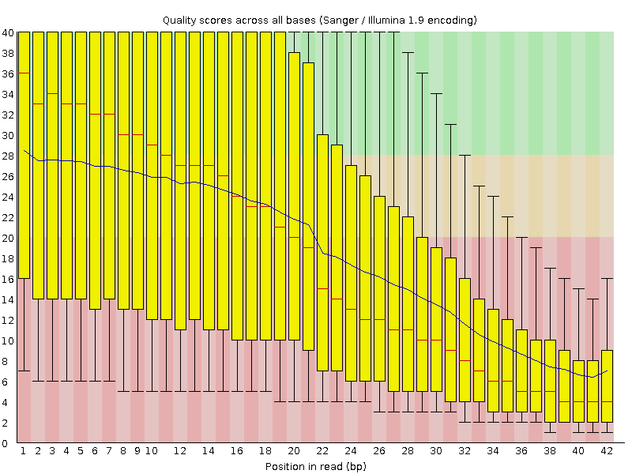
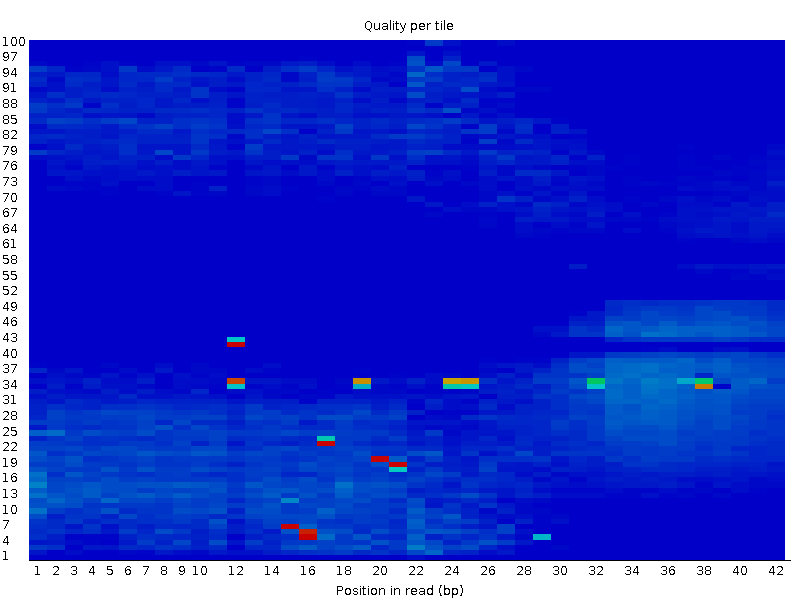
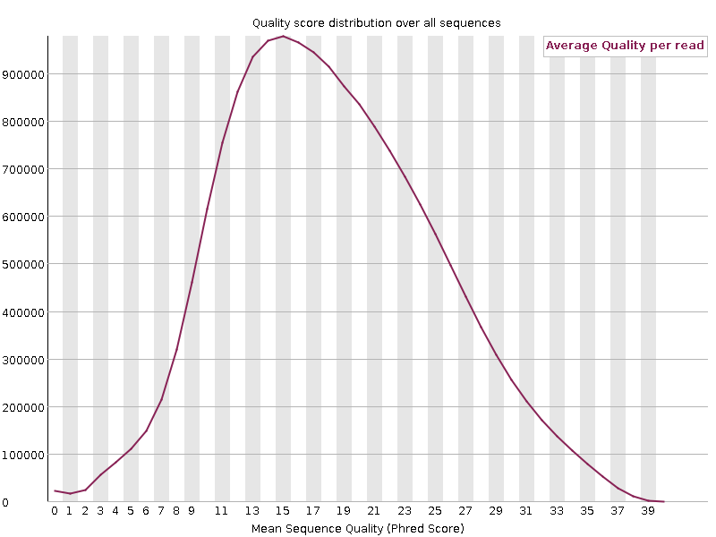
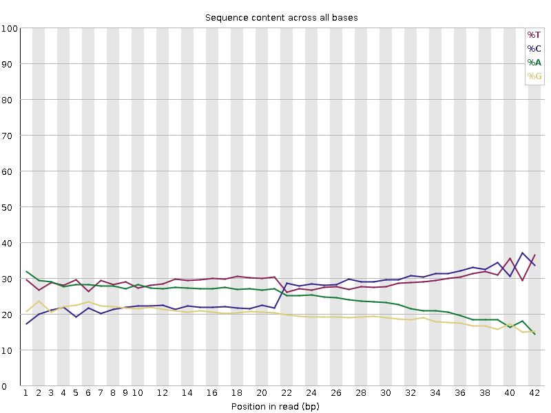
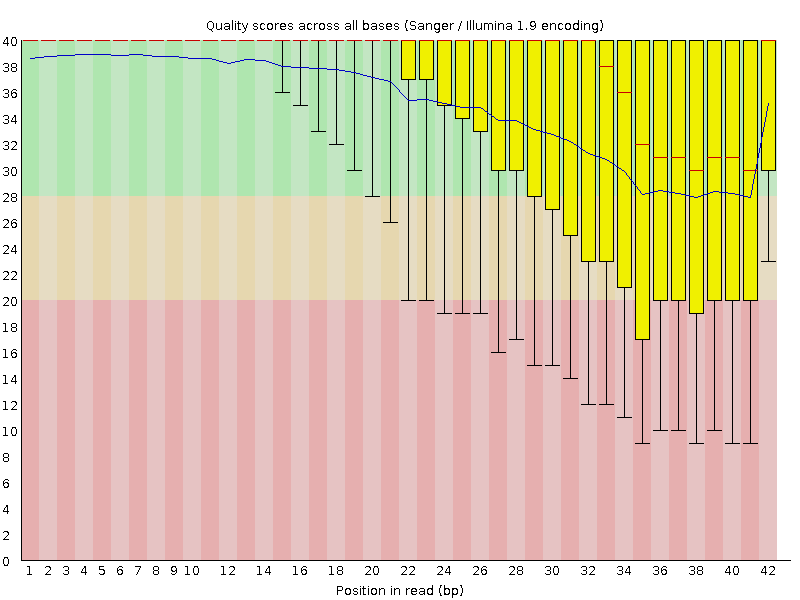
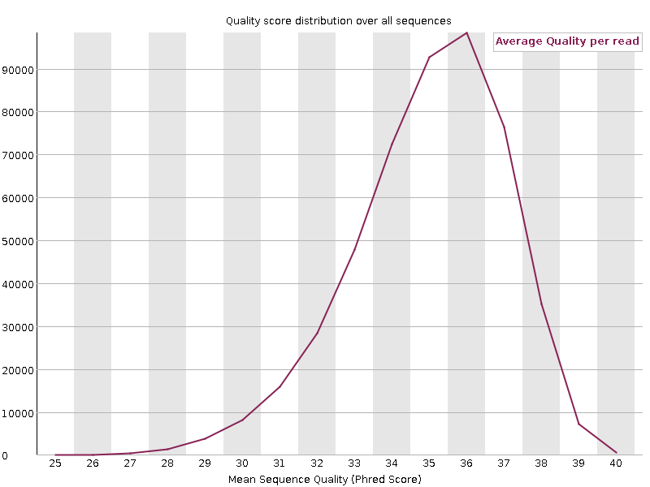
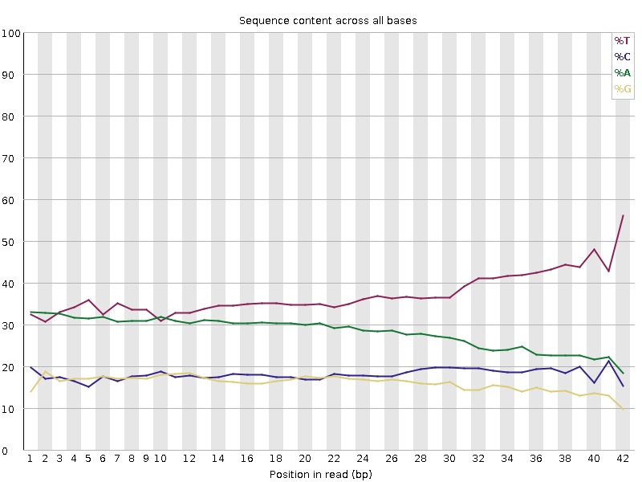
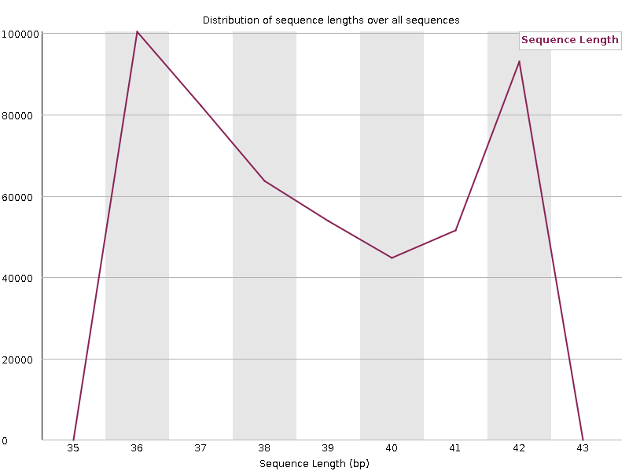

a Suazo:
module load bwa/0.7.17
bwm index Escherichia_coli_K12_MG1655.fastaThis would create multiple files
| Archive | Description |
|---|---|
| .amb | Contain Infromation about ambigous bases (N) in the sequence. |
| .ann | Contain Annotation about genome, like sequences names and lenghts. |
| .bwt | Contain compressed representation of the genome using Burrows-Wheeler algorithm. |
| .pac | Contain packed genome sequence in 2 bits per base. It is used to search the genome. |
| .sa | Contain the suffix array of the genome. |
Suazo:
bwa mem Escherichia_coli_K12_MG1655.fasta SRX189773_FNR_ChIP.fastq This will generate a SAM file with the alignment of the reads to the genome.
Preview:
@SQ SN:NC_000913.2 LN:4639675
@PG ID:bwa PN:bwa VN:0.7.17-r1188 CL:bwa mem Escherichia_coli_K12_MG1655.fasta SRX189773_FNR_ChIP.fastq
SRR576933.1 0 NC_000913.2 914875 60 36M * 0 0 AAGCATGGAATAACCGCCTGGTGAATGCTCGCCATA EDEA=EEEEEBFBDFDEBDAD=DDBAC5CCEEE:E@ NM:i:0 MD:Z:36 AS:i:36 XS:i:0
SRR576933.2 0 NC_000913.2 147284 60 36M * 0 0 TGGAGGCTGACCACGATAAGCTGCCGCTGGTGGTGC EDF:D?=DEEE?EEE5DDDAEB:ECEBBEA>AA956 NM:i:0 MD:Z:36 AS:i:36 XS:i:0
SRR576933.3 0 NC_000913.2 1572373 60 36M * 0 0 AGTGCGATGCCGTTCACCCGGTTTTCTTTATCATTA EEEEED=DD?AD=DDEEBEDEBBECCD>>>BB?EE5 NM:i:0 MD:Z:36 AS:i:36 XS:i:0
• Please analyze the quality of the data, try using fastqc ;)
Here you go, fastqc
Ferro: What is FASTQC?
One of the essential steps in research on the molecule of life is its sequencing. Once the samples have been extracted, the sequencing process is carried out to obtain the nucleotide sequence of the samples. Currently, the new sequencing technology “…can generate hundreds of thousands of sequences in a single run.” (Babraham institute). But it should be mentioned that before doing an analysis of the sequences to reach a conclusion, it is important to do a simple quality control on the fastq files, to observe how well the raw files look for future analysis and thus avoid biases that can affect the research.
To do quality tests for fastq files, there is the FASTQC tool, whose output is a report of the problems that arose in the sequencer or in the start library.This tool can be run in two different modes, the first is as a stand-alone interactive application that can perform a quick analysis with a few fastq files or as a non-interactive mode, where the analysis process is larger, since it does a “…systematic processing of large amounts of files.” (Babraham institute)
To use the tool fastqc I charged the module fastqc/0.12.1 to start the analysis of the quality of the data.
module load fastqc/0.12.1
module list
Currently Loaded Modulefiles:
1) gcc/5.1.0 2) sge/2011.11p1 3) bcftools/1.10.2 4) fastqc/0.12.1
Once charged the module my next step is used the next command to analyze the quality of the fastq:
fastqc mus_musculus_CEBPA_liver_ERR005132.fastq.gz
The output of this comand line is two archives:
The first file, redirects you to the results of the analysis performed by this tool, which contains a summary showing which of these filters the fastq managed to pass and which ones did not:
Summary
Also each filter of the summary has a graph that shows us more precise and visual the information of the result of this filters.
In the case of our fastq we have this results:
Now we will analyze the four filters that failed the FASTQC test:

This graph shows us the quality scores for the base call. Green indicates the call has good quality, yellow has reasonable quality, and red if the quality is very poor.
In our case we can see that most base calls have low or reasonable quality as they are in the red and yellow part, this helps us conclude that the call quality per base is poor.
 This graph shows quality per tile indicating whether there are variations in quality in different regions of the sequencing process by comparing the sequencing quality at different positions within the read (X) to different tiles in the flow cell (Y) and whether certain tiles (sections of the sequencing machine sensor) produce lower quality data.
Dark blue tells us that there is high quality in most positions and tiles. Red/yellow areas show us specific regions with lower quality, which may indicate problems in some tiles in the sequencing flow.
In the case of our fastq we can see that most tiles and reading positions have a high quality, which is a good sign, but there are some areas with red and yellow dots around positions 12-20 bp and 30-35 bp. This tells us that in some tiles, the quality is significantly lower at those positions.
 This graph shows us how poorly photographed the sequences are. The X-axis tells us the sequence’s quality score on the PHRED scale and the Y-axis tells us the number of sequences that contain that score. Our fastq shows that most sequences have an average quality of around 12-15, which means that the accuracy percentage is less than 95%, meaning that the probability of that sequence being correct is low.
 This graph shows the content of each of the nucleotides throughout the read. It is expected that in this graph we can see that the same content of A is equal to the content of T, and in the same way the same content of C must be equal to the content of G. In our case we can observe that at the beginning of the reading the same number of A and T and the same number of C and G are conserved, but from position 20-21 the amount of C deviates and ends up having the same amount of T as C, at the same time in that same position the content of A deviates and ends up having the same amount of A as G. It seems that, halfway through the reading, the amount of purines (A and G) equals each other, as well as the amount of pyrimidines (C and T). The next step would be to investigate what was the cause that caused this error.
In order for our FASTQ file to pass the four filters above, it must be subjected to a filtering process that improves its quality and thus avoids bias in the research.
The other filters are those that passed the FASTQC test, indicating that:
Ref:https://www.bioinformatics.babraham.ac.uk/projects/fastqc/Help/3%20Analysis%20Modules/9%20Overrepresented%20Sequences.html https://www.bioinformatics.babraham.ac.uk/projects/fastqc/Help/3%20Analysis%20Modules/11%20Kmer%20Content.html
It does not present this adapter sequences:
Illumina Universal Adapter
Illumina Small RNA 3’ Adapter
Illumina Small RNA 5’ Adapter
Nextera Transposase Sequence
PolyA
PolyG
Sofi:
I started by finding the route in which the mouse genome fasta was allocated (/mnt/Archives/genome/mouse/)mm10/UCSC/bwa-0.7.15-index/index/mm10.fa).
I just used one command to do the alignment:
module load bwa/0.7.8
bwa mem /mnt/Archives/genome/mouse/mm10/UCSC/bwa-0.7.15-index/index/mm10.fa /mnt/atgc-d1/bioinfoII/sgamino/alignment/mus_musculus_CEBPA_liver_ERR005132.fastq.gz > /mnt/atgc-d1/bioinfoII/sgamino/alignment/mouse_align_exp.samThis leaves us with a SAM file that will contain the aligned reads to the reference genome mm10.fa. Its important to note that the quality of the fasta is bad, so if we desire more confidence in our alignment we should perform base recalibration to search for possible reads of the adaptors.
This is the job i submitted with qsub job.sge.
#!/bin/bash
# Use current working directory
#$ -cwd
#
# Join stdout and stderr
#$ -j y
#
# Run job through bash shell
#$ -S /bin/bash
#
#You can edit the scriptsince this line
#
# Your job name
#$ -N mouse_align_experiment
#
# Allocated memory
#$ -l vf=30G
# Send an email after the job has finished
#$ -m e
#$ -M ghobibohg@gmail.com
#
# If modules are needed, source modules environment (Do not delete the next line):
. /etc/profile.d/modules.sh
#
# Add any modules you might require:
module load bwa/0.7.8
#
# Write your commands in the next line
bwa mem /mnt/Archives/genome/mouse/mm10/UCSC/bwa-0.7.15-index/index/mm10.fa /mnt/atgc-d1/bioinfoII/sgamino/alignment/mus_musculus_CEBPA_liver_ERR005132.fastq.gz > /mnt/atgc-d1/bioinfoII/sgamino/alignment/mouse_align_exp.sam
Preview:
[sgamino@chromatin alignment]$ head -50 mouse_align_exp.sam
@SQ SN:chr10 LN:130694993
@SQ SN:chr11 LN:122082543
@SQ SN:chr12 LN:120129022
@SQ SN:chr13 LN:120421639
@SQ SN:chr14 LN:124902244
@SQ SN:chr15 LN:104043685
@SQ SN:chr16 LN:98207768
@SQ SN:chr17 LN:94987271
@SQ SN:chr18 LN:90702639
@SQ SN:chr19 LN:61431566
@SQ SN:chr1 LN:195471971
@SQ SN:chr2 LN:182113224
@SQ SN:chr3 LN:160039680
@SQ SN:chr4 LN:156508116
@SQ SN:chr5 LN:151834684
@SQ SN:chr6 LN:149736546
@SQ SN:chr7 LN:145441459
@SQ SN:chr8 LN:129401213
@SQ SN:chr9 LN:124595110
@SQ SN:chrM LN:16299
@SQ SN:chrUn_GL456239 LN:40056
@SQ SN:chrUn_GL456359 LN:22974
@SQ SN:chrUn_GL456360 LN:31704
@SQ SN:chrUn_GL456366 LN:47073
@SQ SN:chrUn_GL456367 LN:42057
@SQ SN:chrUn_GL456368 LN:20208
@SQ SN:chrUn_GL456370 LN:26764
@SQ SN:chrUn_GL456372 LN:28664
@SQ SN:chrUn_GL456378 LN:31602
@SQ SN:chrUn_GL456379 LN:72385
@SQ SN:chrUn_GL456381 LN:25871
@SQ SN:chrUn_GL456382 LN:23158
@SQ SN:chrUn_GL456383 LN:38659
@SQ SN:chrUn_GL456385 LN:35240
@SQ SN:chrUn_GL456387 LN:24685
@SQ SN:chrUn_GL456389 LN:28772
@SQ SN:chrUn_GL456390 LN:24668
@SQ SN:chrUn_GL456392 LN:23629
@SQ SN:chrUn_GL456393 LN:55711
@SQ SN:chrUn_GL456394 LN:24323
@SQ SN:chrUn_GL456396 LN:21240
@SQ SN:chrUn_JH584304 LN:114452
@SQ SN:chrX LN:171031299
@SQ SN:chrY LN:91744698
@PG ID:bwa PN:bwa VN:0.7.8-r455 CL:bwa mem /mnt/Archives/genome/mouse/mm10/UCSC/bwa-0.7.15-index/index/mm10.fa /mnt/atgc-d1/bioinfoII/sgamino/alignment/mus_musculus_CEBPA_liver_ERR005132.fastq.gz
ERR005132.1 4 * 0 0 * * 0 0 GATTTACAAGCATATAAACATATAATAAACAACAGCTTTCAT IIIII/IIIICIIIII45II8*%II)I/+&.%*3II'(C3I# AS:i:0 XS:i:0
ERR005132.2 4 * 0 0 * * 0 0 GGTGAAATGACTGAGTCTTCACCCGGTTGGACAGCCCCCCCC I1I%III9I)D40I'(*,#;*%%03#-0E)=$)HI#%$,&(. AS:i:0 XS:i:0
ERR005132.3 4 * 0 0 * * 0 0 AAAAAAAAAAAAAAAAAAAAAAAAAAAAAAAAAAAAAAAAAA IIIIIIIIIIIIIIIIIIIIIIIIIIIIIIIIIIIIIIIIII AS:i:0 XS:i:0
ERR005132.4 4 * 0 0 * * 0 0 GATATCGTAATCTGCCAACTGCCATCCCCTCATCTCACACCC III*7&E.0I%-+:?;C71I&>2:.C$3;//*5/)*,($)=. AS:i:0 XS:i:0UPDATE: Sofia: Turns out, with the last alignment we had 0.0% of alignments ((T_T)/), so we proceeded to remove adaptors with trimmomatic.
Ferro: We used trimmomatic to be able to remove adapters and process our fastq file.
Trimmomatic: “Trimmomatic is a fast, multi-threaded command line tool that can be used to trim Illumina (FASTQ) data and to remove adapters” (http://www.usadellab.org)
This tool has two modes: For Single-end and Paired-end fastq files
The Paired-end mode keeps the match of read pairs and uses the additional information in the paired reads to find the adapters or PCR primers.
Trimmomatic works with fastq files with quality scores phred+33 or phred+64. It accepts files compressed with gzip or bzip2.
Ref:http://www.usadellab.org/cms/uploads/supplementary/Trimmomatic/TrimmomaticManual_V0.32.pdf
Sofia: First we loaded the archive which contains the adaptors from illumina, with the name TruSeq3-SE.fa. Its insides are:
>TruSeq3_IndexedAdapter
AGATCGGAAGAGCACACGTCTGAACTCCAGTCAC
>TruSeq3_UniversalAdapter
AGATCGGAAGAGCGTCGTGTAGGGAAAGAGTGTAThen, we proceeded to run the next command in a job:
-threads 4 -phred64 -trimlog /mnt/atgc-d1/bioinfoII/sgamino/alignment/aln_mouse_liver/mus_musculus_CEBPA_liver_ERR005132.trimlog -summary /mnt/atgc-d1/bioinfoII/sgamino/alignment/aln_mouse_liver/TRIM_mus_musculus_CEBPA_liver_ERR005132.summary /mnt/atgc-d1/bioinfoII/sgamino/alignment/mus_musculus_CEBPA_liver_ERR005132.fastq.gz /mnt/atgc-d1/bioinfoII/sgamino/alignment/aln_mouse_liver/TRIM_mus_musculus_CEBPA_liver_ERR005132.fastq.gz ILLUMINACLIP:/mnt/atgc-d1/bioinfoII/sgamino/Adapters/TruSeq3-PE-2.fa:2:30:10 SLIDINGWINDOW:4:25This command takes reads with high quality (30) but does NOT has a MINLEN argument to define the minimun lenght of the reads. For that reason, the cut sometimes is very big for the read and we end un with many reads with a lenght of less than 36 bp. In this case we remain with around 10 million reads, with an average lenght of 14 bp.
Ferro: After to use the tool trimming, now we analize the qualification of the new file fastq filtered with the tool fastqc.
We have these new results for our fastq: - [PASS] Basic Statistics - [PASS] Per base sequence quality - [PASS] Per sequence quality scores - [FAIL] Per base sequence content - [PASS] Per sequence GC content - [PASS] Per base N content - [WARN] Sequence Length Distribution - [PASS] Sequence Duplication Levels - [WARN] Overrepresented sequences - [PASS] Adapter Content
In contrast to the first graphs of the analysis with fastqc we see that the filters that had not passed already passed after trimmomatic was used.

In the filter called Quality by base sequence we can see that the average quality of each base in each position of the read is in the green region, which indicates that these positions have good quality. Comparing it with the previous graph, we observe that the quality has increased.
 In the case of Per sequence quality scores, with this graph we can confirm that Trimmomatic did filter the minimum size of reads that we asked for, since most of the reads have a size of 36 bp, which was the minimum size we were looking for.
 The case of Per base sequence content Although the new fastq passed this filter, we can see that at the end of the graph the amount of Thymine increases and that of Adenine decreases until having approximately the same amount of Cytosine, in addition to the fact that Cytosine increases and at the end there is a greater amount of Cytosine than its complementary nucleotide, Guanine. It seems that at the end of the graph, the amount of pyrimidine type nucleotides increases. Therefore, even when it passed the filter, there are still different amounts between the complementary nucleotides.
Finally we got two filters that found an error but not so serious as to fail the test:
 In Sequence length distribution we can also see that the trimming was filtered correctly, since in this graph we can see that most of the samples have a size of 36 bp as requested by the tool, and it also indicates that there are also many 42 bp reads. This filter can appear in WARM because there may be a wide distribution of lengths, that is, “not all sequences have the same length” (Babraham Institute), or because the trimming made a cut but not in a uniform way, or because the library is fragmented or due to sequencing errors or if the sequences were trimmed with the adapter..
Ref:https://www.bioinformatics.babraham.ac.uk/projects/fastqc/Help/3%20Analysis%20Modules/7%20Sequence%20Length%20Distribution.html https://docs.omicsbox.biobam.com/latest/FastQC-Quality-Check/
Sequence Count Percentage Possible Source
AAAAAAAAAAAAAAAAAAAAAAAAAAAAAAAAAAAAAAAAAA 922 0.18814713840854458 No HitIn Overrepresented sequencesIt gives us a sequence of 40 adenines, and that this was found 922 times in the data sequence, and represents approximately 0.19% of the total, for this reason, the fastqc tool puts this filter in WARM
Ref:https://www.bioinformatics.babraham.ac.uk/projects/fastqc/Help/3%20Analysis%20Modules/9%20Overrepresented%20Sequences.html https://docs.omicsbox.biobam.com/latest/FastQC-Quality-Check/
Sofia: The code for the alignment is the following:
bowtie /mnt/Archives/genome/mouse/mm10/UCSC/bowtie-0.12.7-index/index/mm10 /mnt/atgc-d1/bioinfoII/sgamino/alignment/aln_mouse_liver/TRIM_mus_musculus_CEBPA_liver_ERR005132.fastq
-S /mnt/atgc-d1/bioinfoII/sgamino/alignment/aln_mouse_liver/TRIM_mus_musculus_CEBPA_liver_ERR005132.samI also performed a trimming but with a MINLEN value of 36, as it is the minimum lenght for an appropiate read. The code used is the following:
bowtie /mnt/Archives/genome/mouse/mm10/UCSC/bowtie-0.12.7-index/index/mm10 /mnt/atgc-d1/bioinfoII/sgamino/alignment/aln_mouse_liver/TRIM_minlen36_mus_musculus_CEBPA_liver_ERR005132.fastq
-S /mnt/atgc-d1/bioinfoII/sgamino/alignment/aln_mouse_liver/TRIM_minlen36_mus_musculus_CEBPA_liver_ERR005132.samAnd the alignment:
bowtie /mnt/Archives/genome/mouse/mm10/UCSC/bowtie-0.12.7-index/index/mm10 /mnt/atgc-d1/bioinfoII/sgamino/alignment/aln_mouse_liver/TRIM_minlen36_mus_musculus_CEBPA_liver_ERR005132.fastq
-S /mnt/atgc-d1/bioinfoII/sgamino/alignment/aln_mouse_liver/TRIM_minlen36_mus_musculus_CEBPA_liver_ERR005132.sam